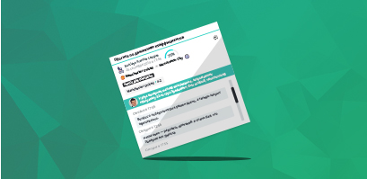

Прогнозы

Barclays Premier League
 Manchester United - Manchester City
Manchester United - Manchester City
У двух вечерних матчей воскресенья, закрывавших программу 32-го тура Эредивизи, был особый, чемпионский
Barclays Premier League
Manchester United - Manchester City
У двух вечерних матчей воскресенья, закрывавших программу 32-го тура Эредивизи, был особый, чемпионский
Прогноз по продвижению коефициентов
Статистическая информация с биржи ставок позволяет вам принимать правильные решения о дальнейших действиях и ставках.  Сменить подписку
Прогнозы LIVE
Прогнозы Live позволяют вам следить за событиями с комментариями от лучших комментаторов!

Информация от аналитиков
Футбол - фавориты сезона 2014/2015
Обычно Удинезе, особенно в матчах с топ-командами борется, пытается цепляться за очки, однако сегодня это был не тот случай. В этот вечер команда Гвидолина предстала перед Ювентусом бледной тенью самого себя. За весь матч Буффон не совершил ни одного сэйва! Более того, даже опасных ударов "мимо кассы" у хозяев сегодня практически не было. Даже опасных ударов "мимо кассы" у хозяев сегодня практически не было.
УЕФА - потенциальные участники плей-офф
Обычно Удинезе, особенно в матчах с топ-командами борется, пытается цепляться за очки, однако сегодня это был не тот случай. В этот вечер команда Гвидолина предстала перед Ювентусом бледной тенью самого себя. За весь матч Буффон не совершил ни одного сэйва! Более того, даже опасных ударов "мимо кассы" у хозяев сегодня практически не было.
 Святослав Цеголко
Святослав Цеголко